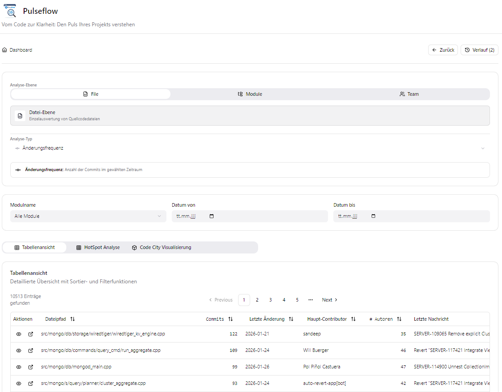

Dashboard User Guide
The Pulseflow Dashboard is your central hub for exploring the health and evolution of your software project. This guide explains how to navigate the interface and use its features effectively.

Views
Pulseflow presents data in four different views, each optimized for a specific kind of insight.
1. Table View
The default view. It provides a detailed, sortable list of all files or modules matching your criteria.
Sort: Click on any column header to sort by that metric.
Quick Actions: * Eye Icon: Opens a quick summary panel on the right. * External Link Icon: Opens a full-screen modal with detailed file history and metrics.
2. Hotspot View (Heatmap)
A visual grid where each cell represents a file.
Size: Represents the complexity or size of the file.
Color: Represents the intensity of the metric (e.g., Churn or Hotspot Score). Red indicates critical areas.
Interaction: Hover over a cell to see details; click to drill down.
3. Code City View
A 3D visualization of your codebase using the “City Metaphor”.
Districts: Files are grouped by their modules (districts).
Buildings: Each building is a file. * Height: Represents Complexity. * Width/Footprint: Represents Lines of Code. * Color: Represents the “Health” or “Risk” level.
Navigation: Click and drag to rotate the city; scroll to zoom in/out.
4. Trend View
A chart showing the historical evolution of metrics over time.
Visualizing Progress: See if your refactoring efforts are paying off (downward trend in complexity) or if technical debt is accumulating (upward trend).
Granularity: Data is aggregated by day or week depending on the selected range.
Drill-Down: File Details
Clicking on any file in the Table, Hotspot, or Code City views opens the File Detail View.
This comprehensive view shows:
Metadata: Path, Module, Size.
Metric History: A sparkline chart showing the trend of key metrics for this specific file.
Complexity: Detailed breakdown of Cognitive and Cyclomatic complexity.
Activity: Recent commit history and active contributors.